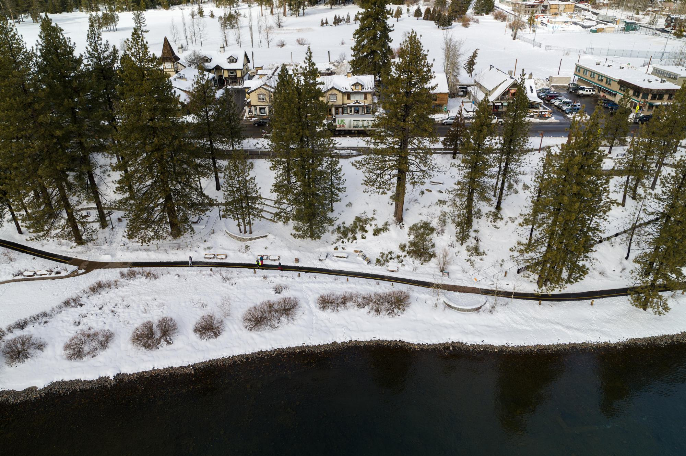
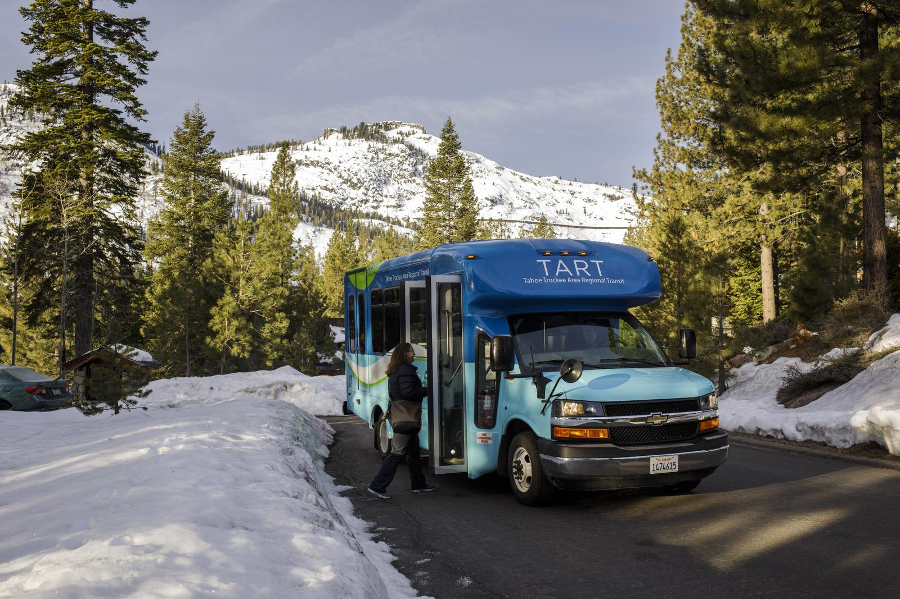
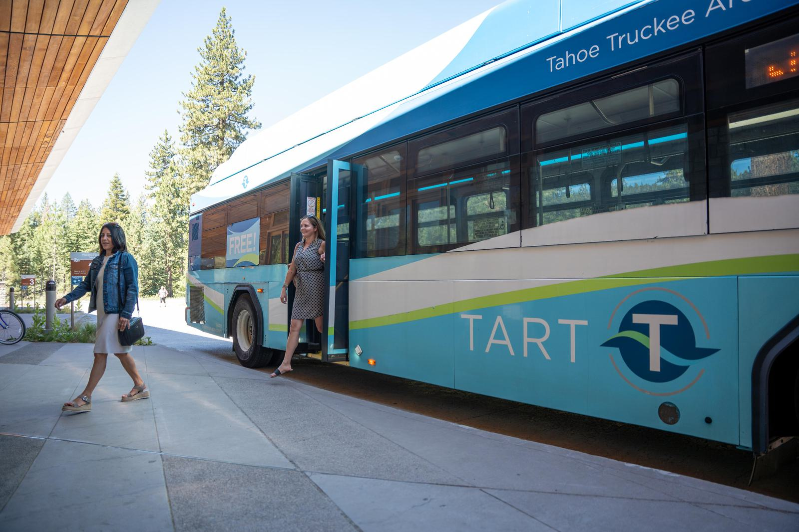
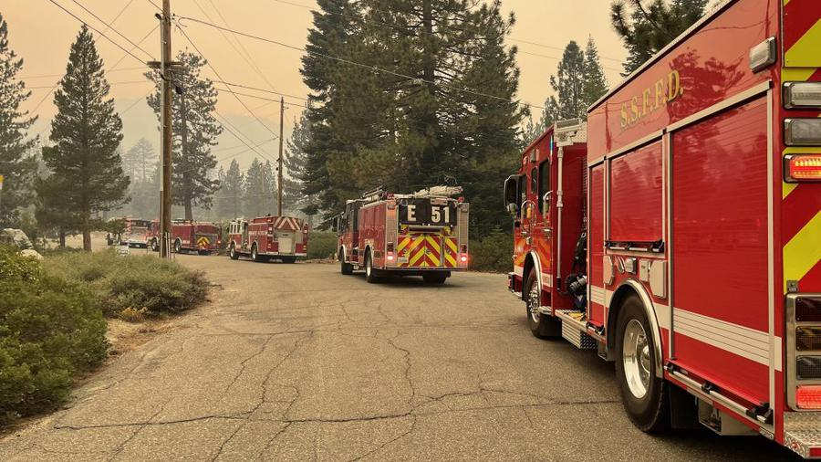
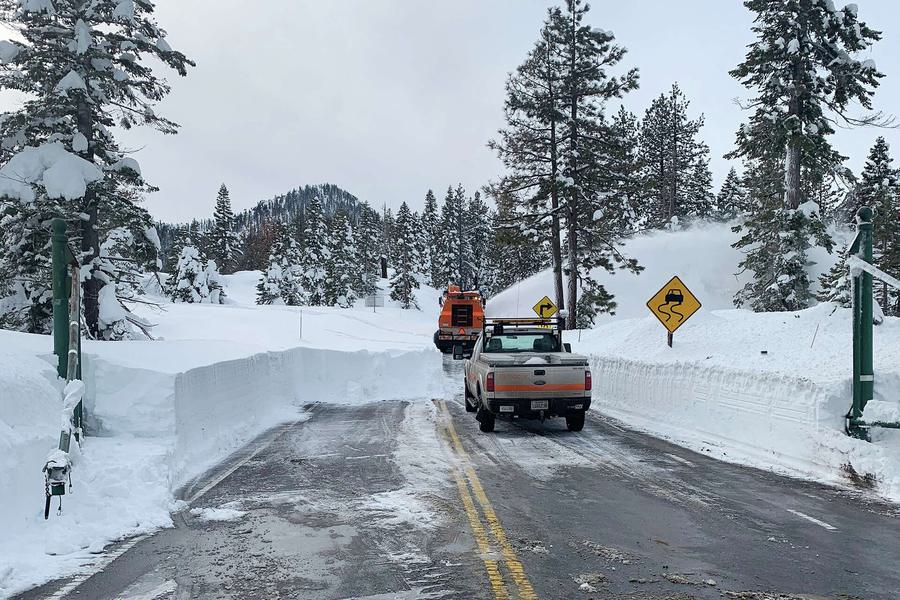
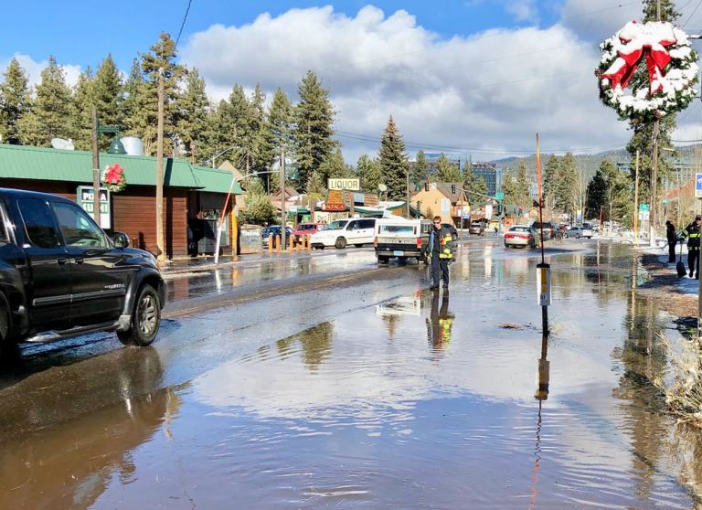
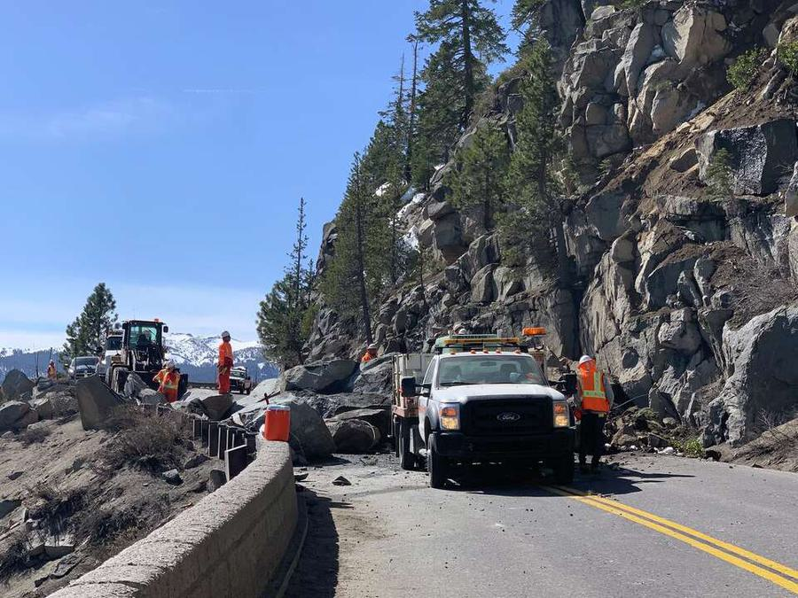
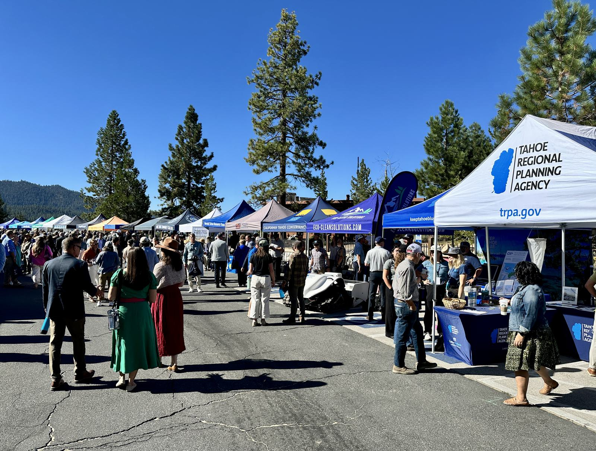
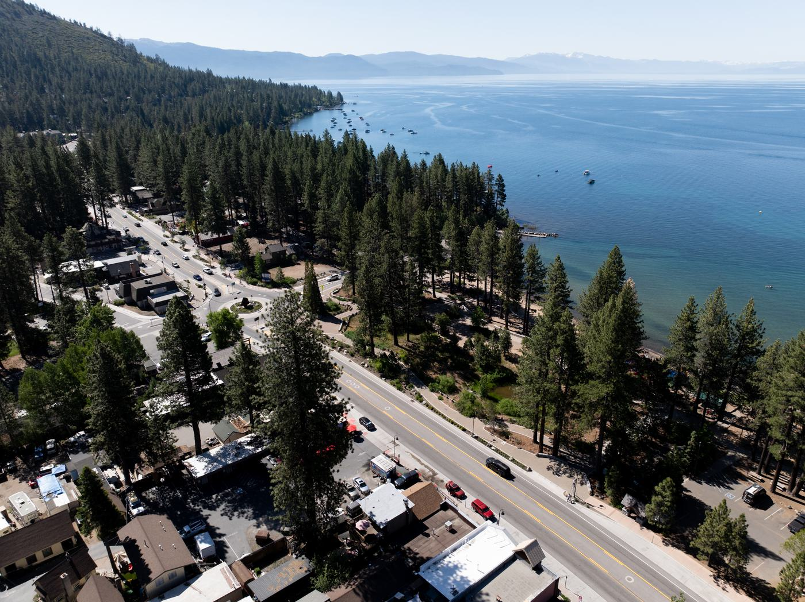
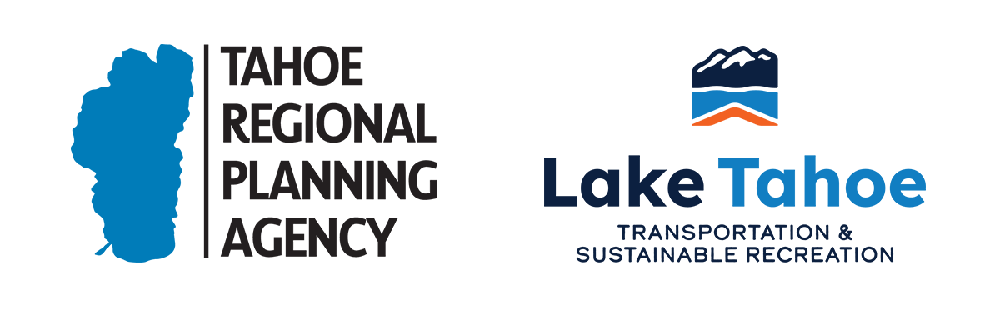

Transportation Resilience Improvement Plan (TRIP)
Identifies transportation vulnerabilities and prioritizes projects and strategies to improve long-term resilience.

Lake Tahoe Basin
Strengthening Transportation Resilience
A regional plan to make Tahoe's roads, transit, and travel information safer and more reliable through wildfire, winter storms, flooding, and other extreme weather.
Project overview
Connecting Tahoe: Strengthening Transportation Resilience is a regional planning effort to help coordinate regional evacuation planning, strengthen key evacuation routes through corridor resilience projects, and improve transportation and communications infrastructure in the face of growing threats.
Led by the Tahoe Regional Planning Agency, the plan will identify transportation vulnerabilities and prioritize improvements to help partners of the Lake Tahoe transportation system better adapt to pressures created by wildfires, winter storms, flooding, and other extreme weather events. The plan will support partners in creating safer, more reliable travel through strengthened infrastructure, improved emergency communications, and enhanced coordination among agencies.
This effort is funded through the U.S. Department of Transportation Promoting Resilient Operations for Transformative, Efficient, and Cost-saving Transportation (PROTECT) Program.

Two parts, one plan
Identifies transportation vulnerabilities and prioritizes projects and strategies to improve long-term resilience.
Evaluates Intelligent Transportation Systems (ITS) and emergency communication tools to support improved partner coordination and traveler information during emergencies.
Stakeholder engagement and a review of how the region has handled past emergencies feed both.

Why it matters
Connecting Tahoe is not an evacuation or emergency plan. It identifies risks and develops long-term strategies and investments that support safer, more reliable transportation systems. These improvements can also strengthen emergency response and evacuation efforts when needed.
The Tahoe Basin is vulnerable to wildfires, heavy snow and winter storms, flooding, landslides, and other extreme weather events. Transportation disruptions during these events can affect residents, visitors, emergency responders, and the regional economy. The plan will help identify where the transportation system is most vulnerable and what improvements are needed to increase resilience.
Goals
Key objectives




The Tahoe area is prone to wildfire, blizzards, floods, and rockslides.
The plan
Five pieces of work, from listening to partners to a list of projects ready for funding.
Interviews, workshops, and agency coordination.
A review of how the region responded to the Angora, Tamarack, Caldor, and Davis fires and to major winter storms, with recommendations for next time.
Interactive mapping tools that identify vulnerable locations and the pinch points in the transportation network.
Explore the draft results →Recommended projects and investments to improve resilience, with cost estimates and funding options.
Recommendations for Intelligent Transportation Systems and communication tools that support emergency coordination.
Schedule
Explore the work
Each part of the project adds its pages here as the work moves forward. Drafts will change as partners review them.
How extreme weather has affected your travel and how you prefer to get important information.
Take the survey →Posted after each workshop and meeting.
How the region responded to the Angora, Tamarack, Caldor, and Davis fires and to major winter storms, with recommendations.
Which roads, bridges, culverts, paths, and transit centers are most exposed to flooding, wildfire, landslides, debris flows, and avalanches.
Open the map →How each road ranks on traffic, detour length, access to services, and equity, with weights you can adjust.
Open the map →Past wildfire perimeters, mapped landslides, and earthquakes across the basin.
Open the map →Where hazards, heavy travel, and vulnerable neighborhoods overlap, to set where improvements come first.
Resilience projects with cost estimates and funding options.
Upgrades to traveler information and traffic management, with a prioritized project list.
How transit providers and community groups can move people who do not have a car.
Definitions and data sources are on the References page; methods and workshop materials are on the project pages index.

Get involved
Community and stakeholder input, including comments from residents, workers, emergency responders, and others who have experienced transportation challenges during emergencies, will be essential to the planning process.
Public survey
Share how extreme weather has affected your travel, the transportation challenges you have faced, and how you prefer to get important information. The survey takes about three minutes, and you can enter a gift card raffle when you finish.

Stay informed
Project updates, meeting materials, and opportunities to provide feedback will be posted on this webpage throughout the planning process.
